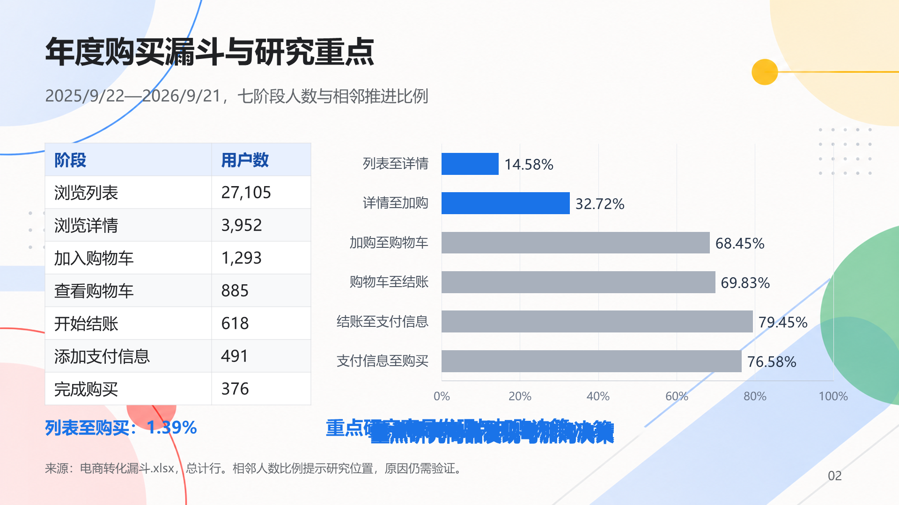

D01_96b385d0_s0002_original
natural / original / 来源 C
打开 PPTX · 渲染：ok
improper_font_sizing: unknown · occluded_content: unknown · cluttered_layout: unknown · content_overflow_cutoff: unknown
人工状态：pending_human_review；审核者：
修改记录：none
复核备注：原始页面不预设为全阴性；待人工逐标签核验。
D01_96b385d0_s0002_clutter
controlled / clutter / 来源 C

打开 PPTX · 渲染：ok
improper_font_sizing: unknown · occluded_content: unknown · cluttered_layout: unknown · content_overflow_cutoff: unknown
人工状态：pending_human_review；审核者：
修改记录：clutter
复核备注：操作仅代表修改意图，不代表缺陷标签成立；可多标签或unknown。 Codex目视初查：修改集中在页面底部窄带，可能未形成目标缺陷，须人工独立判断；此备注不是人工标签。
D01_96b385d0_s0002_font_small
controlled / font_small / 来源 C
打开 PPTX · 渲染：ok
improper_font_sizing: unknown · occluded_content: unknown · cluttered_layout: unknown · content_overflow_cutoff: unknown
人工状态：pending_human_review；审核者：
修改记录：font_small
复核备注：操作仅代表修改意图，不代表缺陷标签成立；可多标签或unknown。 Codex目视初查：修改集中在页面底部窄带，可能未形成目标缺陷，须人工独立判断；此备注不是人工标签。
D01_96b385d0_s0002_occlusion
controlled / occlusion / 来源 C
打开 PPTX · 渲染：ok
improper_font_sizing: unknown · occluded_content: unknown · cluttered_layout: unknown · content_overflow_cutoff: unknown
人工状态：pending_human_review；审核者：
修改记录：occlusion
复核备注：操作仅代表修改意图，不代表缺陷标签成立；可多标签或unknown。
D01_96b385d0_s0002_overflow
controlled / overflow / 来源 C
打开 PPTX · 渲染：ok
improper_font_sizing: unknown · occluded_content: unknown · cluttered_layout: unknown · content_overflow_cutoff: unknown
人工状态：pending_human_review；审核者：
修改记录：overflow
复核备注：操作仅代表修改意图，不代表缺陷标签成立；可多标签或unknown。